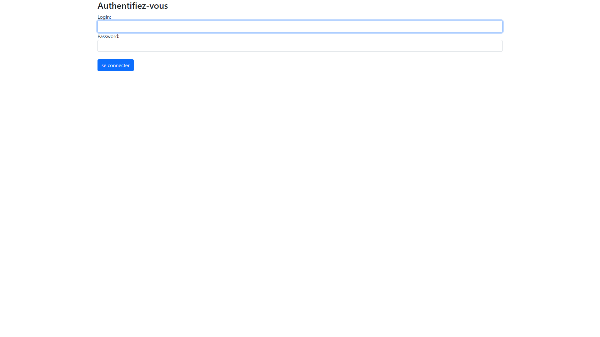
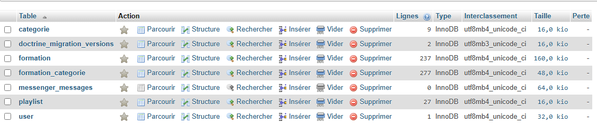
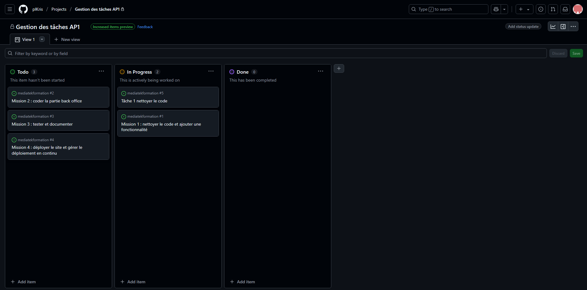

Atelier professionnel 1 (MediatekFormation)
Présentation du projet
Mediatek86 est une plateforme de mise à disposition de formations en ligne. Elle permet aux utilisateurs
d’accéder à des auto-formations sur divers sujets. Mediatek86 a confié à Infotech Services 86, une ESN
spécialisée dans le développement informatique, la tâche d’améliorer son application web existante,
développée sous Symfony
L’application MediatekFormation, exploitant
une base de données MySQL, était en cours
de développement. Suite à un premier audit,
plusieurs améliorations ont été identifiées,
notamment au niveau du code existant et des
fonctionnalités manquantes.

Dans le projet "mediatekFormation", j'ai également développé
un espace de connexion pour permettre aux admin
d'accéder au coté admin de l'application.
Permettant la gestion des formation,playlists et catégories .

Pour créer et gérer les données des formations, j'ai utilisé une base de données SQL. La modélisation de la base de données a été réalisée de manière à stocker les formations et ce qui est reliées à elles comme les playlists et les catégories, en établissant les relations nécessaires entre elles pour assurer une bonne intégrité des données.

Le projet "mediatekFormation" a été réalisé seul. Pour faciliter la gestion et la coordination des tâches, j'ai utilisé l'outil projet dans Github permettant de créer un Kanban.

Cela m'a permis de créer des tâches,pour organiser les différentes étapes du projet et suivre l'avancement de manière visuelle.
J'ai pu m'organiser efficacement et assurer un suivi régulier des progrès du projet. Cela a contribué à la réussite du projet "mediatekFormation".
Compétences dévelopée
Gérer le patrimoine informatique ✔
Répondre aux incidents et aux demandes d’assistance et d’évolution ✔
Développer la présence en ligne de l’organisation ✔
Travailler en mode projet ✔
Mettre à disposition des utilisateurs un service informatique ✔